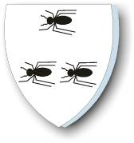
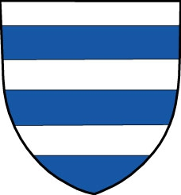

46950 Claus Jacobsen (Myre) till Värestorp
93900 Jacob Jacobsen Myre (Kyrning) till Hunnestad
* omkring 1495 Skåne, Sverige
† omkring 1541 Hunnestad (M)
Kommisionsledamot
Blev ca 46 år
187800 Jacob Kyrning
* före 1465
† efter 1495
Blev minst 31 år

187801 Bodil Pedersdatter Myre
* 1460 Klinteby, Bornholm, Danmark
† efter 1495
Blev minst 35 år
375602 Peder Truedsen Myre
* 1435 Klinteby, Bornholm, Danmark
† 1489 Klinteby, Bornholm, Danmark
Blev högst 54 år
375603 Mette Eskildsdatter av Duege
* före 1435 Möllerup (M)
93901 Bente Josephsdatter Bielke
† efter 1541
187802 Joseph Anderssen Bielke af Gyllarp
* efter 1400 Gullarp, Trollenäs (M)
† efter 1477
Riddare

375604 Anders Nielsen Galen af Gyllarp
* före 1351
† efter 1400
Blev minst 50 år
187803 Kirsten Splid (Fasti)
* omkring 1439
† omkring 1470
Blev ca 31 år
375606 Jep Pedersen Fasti till Ørs
† efter 1455
Häradsfogde
375607 Barbara Jensdatter Juel